Key task before check-in
Room Assignment
Decide the actual room number to use for the room type that was booked. This page covers the difference between manual and automatic assignment and how to check after assigning.
1. What is room assignment
At the time of booking, sometimes only the room type is decided, such as "1 twin room", and the specific room number is not yet set. Room assignment is the operation of assigning an actual room, such as "Room 203", to that reservation.
| Method | When to use | Who |
|---|---|---|
| Manual assignment | When you want to specify a particular room, or handle today's unassigned reservations | Front desk / the manager (person in charge) |
| Automatic room assignment | Decides automatically at the set timing, based on room type and priority rules | Settings are changed by the administrator |
| Bulk floor assignment | Reserving a whole floor in advance for a group, such as a school trip | The manager only |
2. Checks before assigning
- The property name and displayed date are correct
- The reservation's stay dates, number of nights and number of guests are correct
- The reservation's room type matches the type of the room you assign
- The room's capacity is not exceeded
- There is no other reservation or room block in the same period
- Cleaning can be finished by the arrival time
- No unintended room move happens partway through a multi-night stay
- You have checked requests such as non-smoking, floor and adjacent rooms, and the shared notes
3. Assign manually from reservation details
Method A: Choose in 「部屋割り当て」 (Room assignment) in reservation details (same room for the whole stay)
The official manual (online version) explains these separately: the room for the whole stay is chosen in ［部屋割り当て］ (Room assignment) in reservation details, and 「部屋変更」 (Change room) in 「宿泊変更」 (Change stay) is used only when changing rooms by day. In ［部屋割り当て］ (Room assignment), choose a room number for each room or press 「おまかせ割り当て」 (Auto-assign for me). 「おまかせ割り当て」 (Auto-assign for me) assigns rooms following the automatic room assignment settings (rotation and priority) (the official text calls it 「おまかせ選択」 (Auto-select for me)). On the Araki Hotel screen too, we have confirmed that the 「おまかせ割り当て」 (Auto-assign for me) button appears for rooms with no room number entered (Adding/removing rooms, checked 2026-10-05). How to save after choosing a room number is not yet confirmed at Araki Hotel. Even for a multi-night stay, the same room is entered for all days, so this method makes missed entries less likely.
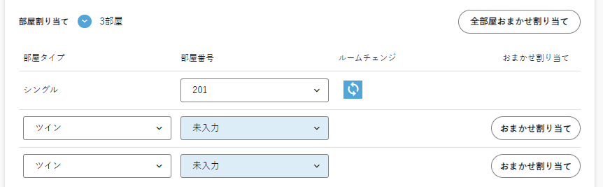
Method B: Choose by day in 「宿泊変更」 (Change stay) → 「部屋変更」 (Change room) (change rooms by day / assign only some days)
This is the procedure confirmed in the official front operations PDF. It is also used for group reservations and multi-room reservations.
- Open the target reservation and match the name, stay dates and number of guests.
- Open 「部屋変更」 (Change room) in 「宿泊変更」 (Change stay).
- Click the 「未割当」 (Unassigned) cell for the date to assign.
- From the dropdown, choose a room number that matches the booked room type.
- For a multi-night stay, check that all dates have the same room.
- In the guest register, also check which guest is in which room.
- Save the reservation, open the reservation details again and check the room number.
Method C: Assign from the room status chart (reservations arriving that day)
The official manual describes a way to assign unassigned reservations directly from the room status chart (not yet confirmed at Araki Hotel).
- On the room status chart, press a room with a speech-bubble icon (a reservation is available to assign).
- Press 「未部屋割りの予約を割り当てる」 (Assign an unassigned reservation) and choose the reservation to assign.
- Press 「割り当てる」 (Assign).
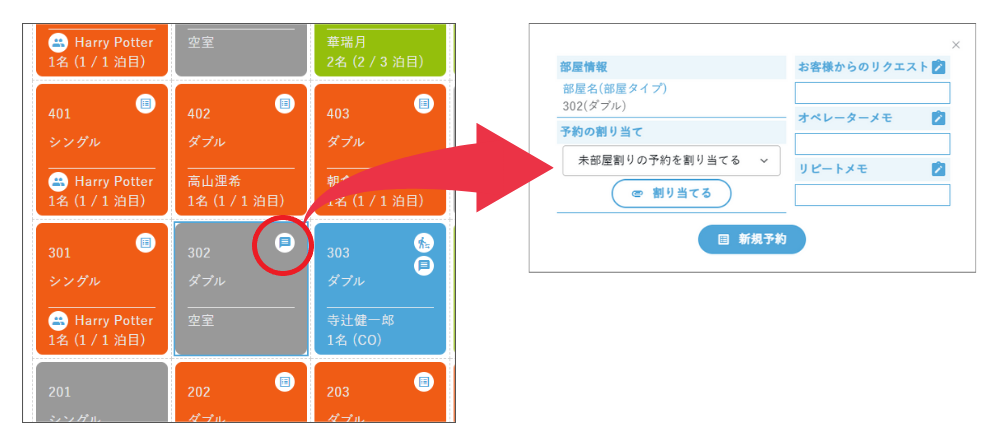
4. Check unassigned reservations in 「部屋割り表」 (Room allocation chart)
On the real screen, the following items were confirmed.
- Property selection
- 2-week view / base-date view, changing the base date
- 「未部屋割り一覧」 (Unassigned list) and the unassigned count
- Schedule bar, room type, representative / number of guests, number of rooms, booking channel, period of use
- Group and with-children indicators, filter mode
- Room assignment status chart, multiple reservations, blocked, floor filter
- 「自動割当」 (Auto-assign) button
When there are unassigned reservations, they are listed one per row in 「未部屋割り一覧」 (Unassigned list), and the count appears at the top right, such as 「未割当数：14件」 (Unassigned: 14) (checked 2026-10-09). The columns are: schedule bar / room type / representative / number of guests / rooms / total rooms / booking channel / period of use / auto-assign (a button on each row).
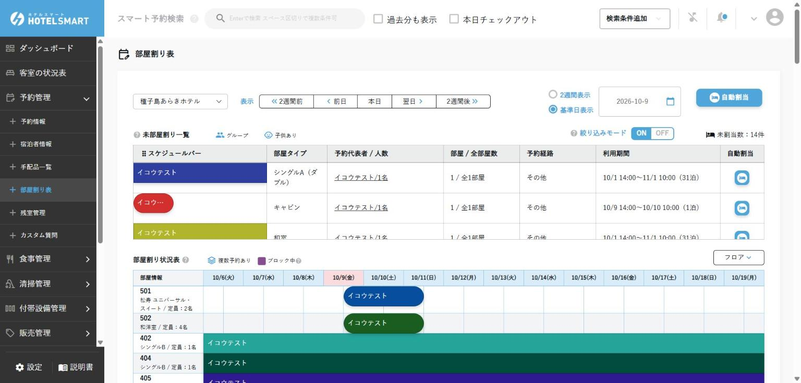
「自動割当」 (Auto-assign) on each row: When you press 「自動割当」 (Auto-assign) on the right of a row in the Unassigned list, the 「自動割り当て」 (Automatic assignment) confirmation screen opens, showing the stay period, representative's name, specified room type and the room number to be assigned (example: 417（ツイン） (417, Twin)). Pressing 「割当をする」 (Assign) assigns it immediately and the screen reloads (no separate save is needed) (checked 2026-10-09).
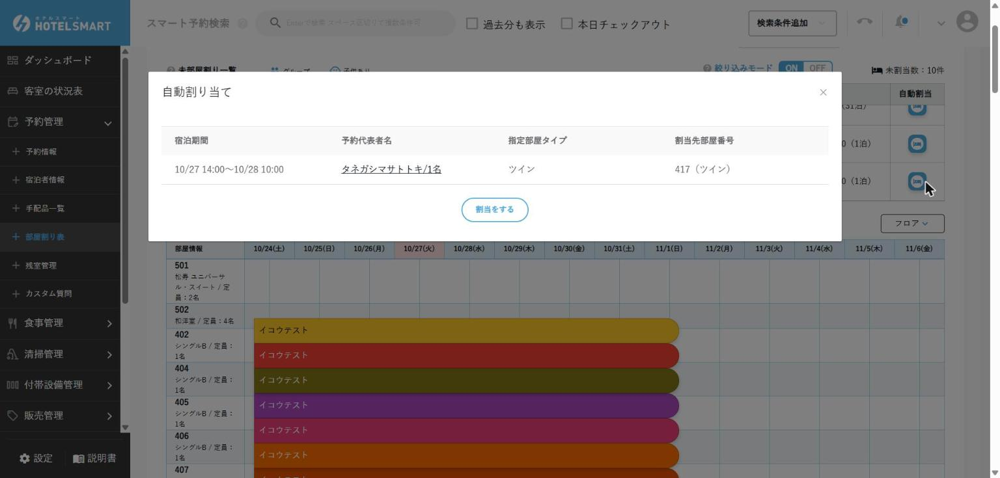
「自動割当」 (Auto-assign) at the top right (all): When pressed, all unassigned reservations that cover the displayed base date are listed, and you can check the room numbers to be assigned. 「割当をする」 (Assign) assigns them all at once. Those that cannot be assigned show 「割り当てられる部屋がありません」 (No room available to assign) and stay unassigned. Example: running it with base date 10/10 included a 1-night reservation from 10/9 to 10/10 and a long-term reservation from 10/1 to 11/1, and rooms were assigned to 13 of 15 reservations (checked 2026-10-09).
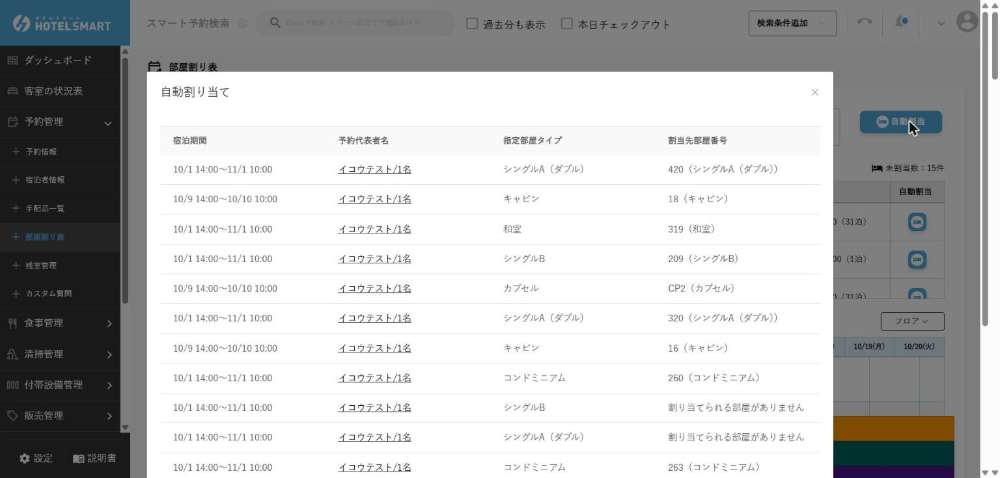
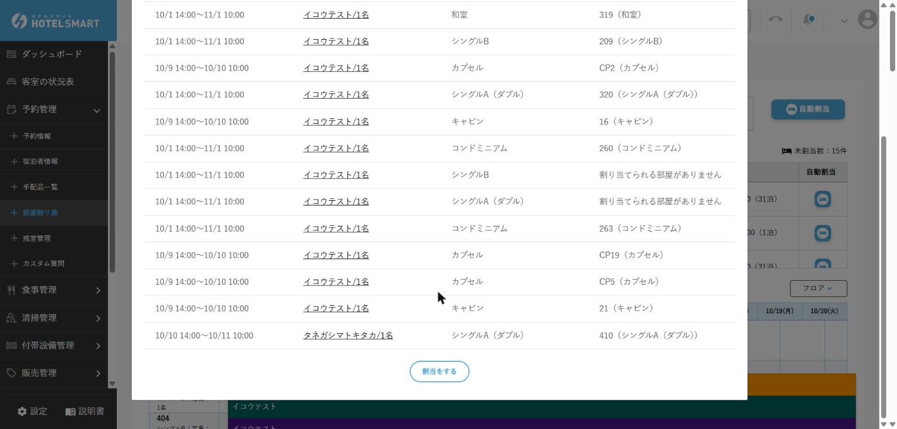
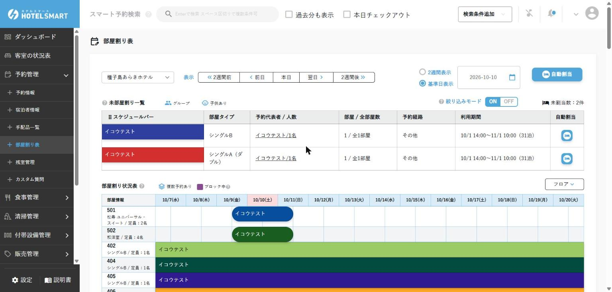
The representative column of the room allocation chart is shown in furigana (katakana reading) (example: タネガシマサトトキ) (checked 2026-10-09).
5. How automatic room assignment works
- Choose the timing for automatic room assignment, in a range from the check-in day to 90 days before.
- As needed, set rotation room assignment and a priority for each room.
- When the set timing arrives, rooms are assigned by the daily batch from around 1:00 a.m.
- Reservations that come in after the assignment timing has passed are assigned immediately.
- After assignment, check the result in 「部屋割り表」 (Room allocation chart) or the reservation details.
Araki Hotel's current settings
Location: 物件管理 (Property management) → 物件情報 (Property information) → 「詳細を見る」 (View details) for Tanegashima Araki Hotel → 自動部屋割り設定 (Automatic room assignment settings). The settings were only viewed, not changed (checked 2026-10-09).
| Item | Current setting |
|---|---|
| 自動部屋割り (Automatic room assignment) | 当日チェックインの予約のみ実行 (Run only for same-day check-in reservations) |
| ローテーション部屋割り (Rotation room assignment) | 行う (On) |
| 部屋割り優先順位 (Room assignment priority) | All 105 rooms 「未指定」 (Not specified) |
The options for automatic room assignment are 「行わない」 (Off), 「当日チェックインの予約のみ実行」 (Run only for same-day check-in reservations) and 「チェックインN日前の予約まで実行（N=1〜90）」 (Run for reservations up to N days before check-in (N=1–90)). According to the on-screen help, it runs during the 「日次で当日未明の夜間に行われる定期処理」 (daily scheduled process run overnight in the early hours of the day) and 「予約の保存・更新時」 (when a reservation is saved or updated). According to the on-screen help for room assignment priority, rooms are assigned from the smallest number; with the same priority, from the room with the smallest capacity; and rooms not specified come last (checked 2026-10-09).
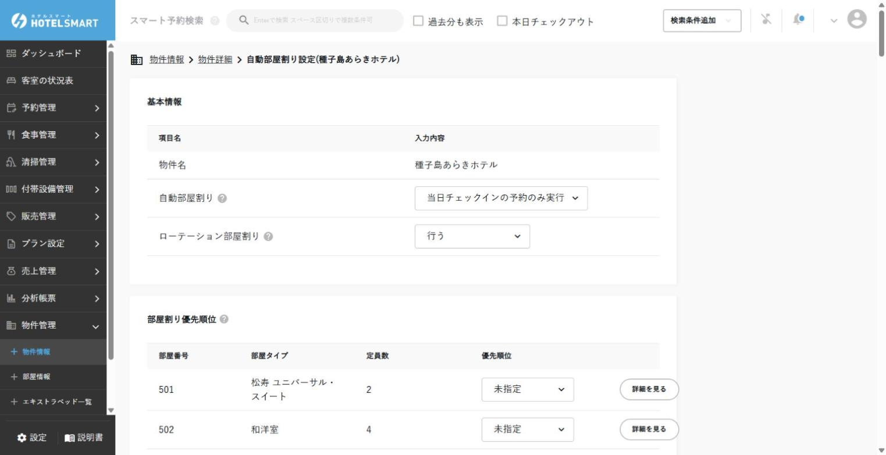
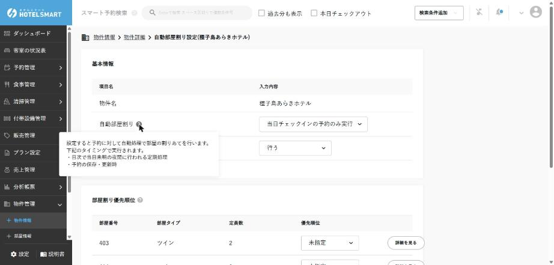
Assignment order
| Setting | How rooms are assigned |
|---|---|
| ローテーション部屋割り：行う (Rotation room assignment: On) | Rooms that have been vacant longest come first. This is applied before room assignment priority. |
| Same vacancy period | The room assignment priority you set is applied. |
| Same priority | Rooms with smaller capacity come first. |
| No priority set | They come after rooms that have a priority set. |
6. Automatic room assignment did not run / failed
| What to check | Details |
|---|---|
| Room type | Whether a room type is set for the reservation and for each room |
| Run timing | Whether the set "days before check-in" timing has been reached |
| Vacancy | Whether there is a vacancy in the target room type. Also check the in/out times of the reservations before and after |
| Capacity | Whether the number of guests exceeds the capacity in the room details |
| Block | Whether it overlaps a block period for a breakdown, repair, etc. |
| 「割り当てられる部屋がありません」 (No room available to assign) | A reservation shown like this on the confirmation screen of 「自動割当」 (Auto-assign) at the top right has no vacant room of the same type. It stays unassigned, so assign it by hand or consult the manager (checked 2026-10-09) |
| Cleaning status | Rooms waiting for cleaning also became assignment candidates (example: room 410, checked out early and waiting for cleaning, was assigned to the next day's reservation). After assigning, always check in the cleaning schedule whether cleaning is finished (checked 2026-10-09) |
How to find unassigned reservations
Method 1: 予約管理 (Reservation management) → 予約情報 (Reservation information) → 条件を選択して絞り込み (Select conditions to filter) → 部屋割当状況 (Room assignment status) 「未部屋割り」 (Unassigned)
Pressing 「条件を選択して絞り込み」 (Select conditions to filter) opens the 「条件を設定してください」 (Please set conditions) panel. The options for room assignment status are 「未部屋割り／部屋割り済み／自動部屋割り失敗／部屋タイプから未割り当て」 (Unassigned / Assigned / Automatic assignment failed / Unassigned from room type). The list is not shown unless you enter a period such as check-in (period within 1 year). Example: check-in 2026/10/01–10/31 + Unassigned → 14 reservations. For unassigned reservations, the room name column shows only the room type in parentheses, such as 「（キャビン）」 (Cabin) (checked 2026-10-09).
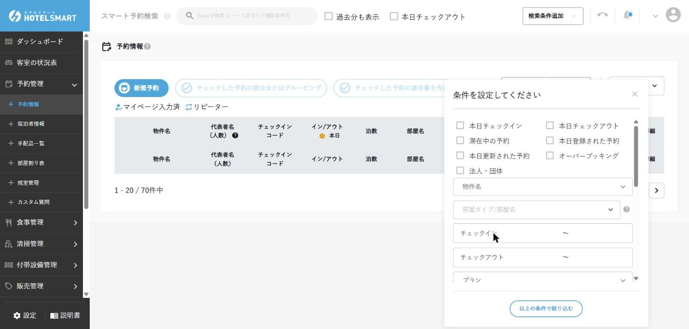
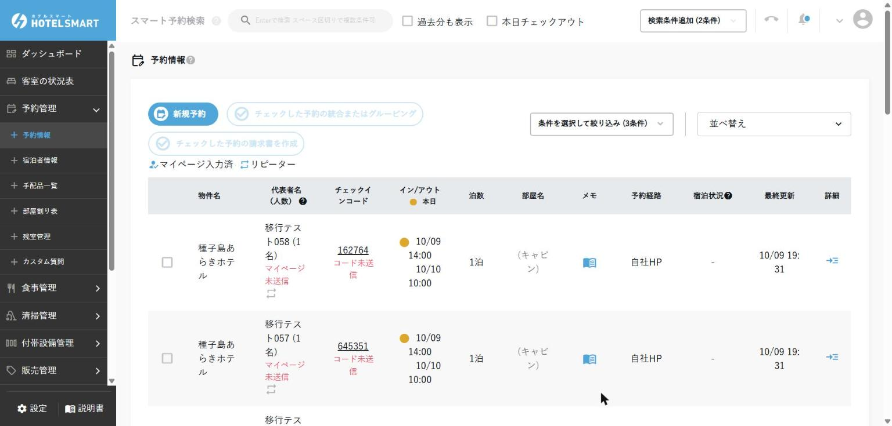
Method 2: 予約管理 (Reservation management) → 部屋割り表 (Room allocation chart) → set the base date → 未部屋割り一覧 (Unassigned list)
Method 3: In the 「予約状況」 (Reservation status) table on the dashboard, pressing the 「未部屋割り」 (Unassigned) number takes you to the room assignment page, and pressing the 「自動部屋割り失敗」 (Automatic assignment failed) number takes you to the reservations concerned (How to read the dashboard). According to the official manual, when automatic room assignment fails, you are notified with 「自動部屋割りが失敗しました」 (Automatic room assignment failed).
7. Bulk floor assignment
A feature that reserves all rooms on a specified floor when creating a new reservation, for example for a school trip. Do not use it for normal reservations.
- The floor must be set for floors and for each room
- 「フロア一括割当」 (Bulk floor assignment) must be enabled in the reservation details display settings
- It can be used only when creating a new reservation
- To change an existing reservation, use 「宿泊変更」 (Change stay)
8. Change or remove an assignment
- Check the reason for the change and the target dates.
- Check vacancy, cleaning, blocks and capacity of the new room.
- Select the new room from the cell for the target date.
- For a change partway through a multi-night stay, check the room numbers before and after the move date.
- After saving, share the old and new rooms with keys, cleaning and the next shift.
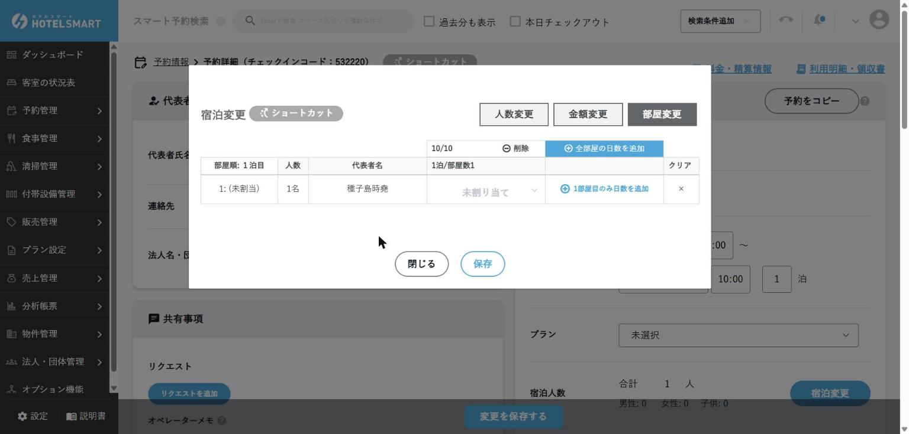
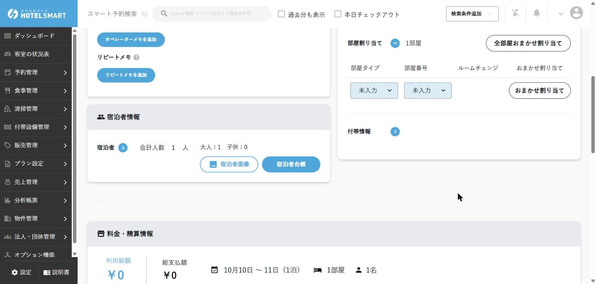
9. Awaiting confirmation from HOTEL SMART / on site
Until the following are confirmed, dragging in 「部屋割り表」 (Room allocation chart) and changing settings are handled by the manager.
- Whether you can assign by dragging from the Unassigned list to a room on the room allocation chart (the official manual only describes dragging an already assigned reservation to another vacant room)
- When the OTA room type changes after assignment, whether it is OK to fix it by hand in reservation details, and how this relates to automatic updates (the official manual only says "once a room is assigned, it is not reflected" and gives no procedure for fixing it; when the imported room type is wrong in the first place, it advises checking 「部屋タイプ割り当て」 (Room type mapping) in the site controller integration settings)
- Whether the operation history and who made a wrong assignment can be checked (in the official manual, the history you can check is only the CSV of charge and payment operation history, and the check-in/out, cancellation and stop/resume of automatic updates that are logged automatically in the operator memo; there is no mention of a room assignment history)
- Whether bulk floor assignment can be disabled (in the official manual, it is a feature available only when 「フロア一括割当」 (Bulk floor assignment) is turned ON in 〖予約詳細表示設定〗 (Reservation details display settings) in the property details. It is enough to check Araki Hotel's current setting (ON/OFF). There is no mention of restrictions by permission level)
Confirmed
- The 「自動割当」 (Auto-assign) button on the room allocation chart, when pressed, assigns unassigned reservations covering the base date, with a confirmation screen. The scheduled process assigns same-day check-in reservations in the early hours every day (checked 2026-10-09).
- Rooms waiting for cleaning also become assignment candidates (checked 2026-10-09).
- Araki Hotel's current settings: automatic room assignment 「当日チェックインの予約のみ実行」 (Run only for same-day check-in reservations), rotation room assignment 「行う」 (On), room assignment priority 「未指定」 (Not specified) for all 105 rooms (checked 2026-10-09).
- Reservations that were manually unassigned are also covered by the automatic process if they have a room type, and were reassigned (a same-day check-in reservation that was unassigned got the same room reassigned by the next morning; checked 2026-10-10). If unassigning also cleared the room type, it is not covered, so enter the room type again as noted in section 8.